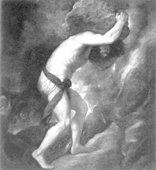

Ölümlü biri olarak zaten sınırlı olan gücüne karşın Sisifos (Sisyphos); aklı ve ondan kaynaklanan kurnazlığıyla tanrılara hep kafa tuttu. Yeni yeni buluşlarıyla, inatçılığıyla sürekli kök söktürdü onlara...
Sisifos; Korintos kentinin hem kurucusu, hem de ilk kralıydı. Zaten daha kral olur olmaz yaptırdığı iki limanla, kısa sürede oluşturduğu gemi filolarıyla, Akdeniz coğrafyasında zengin bir alışveriş merkezine dönüştürdü krallığını. Bu yüzden halk bolluk ve huzur içinde yaşamaya başladı. Haliyle bu yönüyle de çok ün kazandı... Ne var ki rahat ve bolluğa ulaştırdığı halkının mutluluğu, hem tanrıların hem komşu kralların kıskançlığını şahlandırmakta da gecikmedi!
O yüzden olacak onun akıllılığı ve kurnazlığı konusunda birçok öykü dolaşıyordu dilden dile... Bunların en ünlüsü, Autolikos (Autolykos) adındaki bir sığır hırsızıyla ilgili olanıydı. Damadı olacak kral Laertes'in bile sürülerini kimselere göstermeden alıp götüren Autolikos, bir gün kral Sisifos'un da sığırlarını çalmaya kalktı!.. Ne var ki Sisifos; başına gelecekleri çok öncelerden sezinlediği için, sığırlarının ayak tırnaklarına kızgın demirle kendi adını yazmıştı! Sığırları çalınınca da haliyle hemen onların izini sürdü ve ta Attika krallığında, o ele avuca sığmayan hırsızı ve sürüsünü arayıp buldu... Ama aynı gün hırsız Autolikos'un kızı, Attika kralı Laertes'le düğün dernek içindeydi... Autolikos bütün pişkinliğiyle Sisifos'u konuk olarak alıkoydu evinde. Sisifos da, damat olacak kraldan bir gece önce, alla oyunla gelinin gönlünü çeldi; kendisi girdi gerdeğe! Bu kaçamak birleşmeden doğan çocuğa da Odisseus adı verildi. Bu Odisseus daha sonraları zoraki olarak katıldığı Troya savaşları sırasındaki kurnazlıklarıyla tarihe geçti; onun için düzülen destanlar, kuşaklardan kuşaklara, dillerden dillere dolaştı! Örneğin hileli Troya Atı'nı o tasarlamış, yapımını da o üstlenmişti... İçine asker doldurup surların dışında bıraktıkları bu tahta atın bir tanrı armağanı diye surlardan içeri alınmasıyla, on yıldır direnen Troya krallığı, bir gecede düşmüştü! Gene Odisseus'un Troya savaşları sonrası ülkesine dönerken denizlerde yaşadığı serüvenlerden sağ salim çıkması; aklını kullanıp yazgıya ve tanrılara karşı verdiği savaşımlar, hep babası Sisifos'a tıpatıp çektiğinin delilleriydi!

Sisifos kayayı tepeye doğru yuvarlarken
Sisifos'un bir başka ünlü serüveni de, çapkınlığı dillere destan Baştanrı Zeus'la ilgili olanıydı. Hep âdeti olduğu üzere gene bir gün Zeus, ırmak tanrısı Asopos'un güzel kızı Aygina'ya (Aigina) kaptırdı gönlünü... Onu kandırabilmek ve karısı Hera'nın gözlerinden kaçırabilmek için bir kartala dönüştü. Sonra da bu kartala dönüşmüş haliyle bir punduna getirip kızı kanatları arasına alıp kaçırdı... Sisifos açık seçik görmüştü bu olayı gözleriyle! Irmak tanrısı Asopos da coşup coşup taşarak, öfkeden köpürerek her yerde aramaya başladı kızı Aygina'yı... Sisifos da bu acılı ırmak tanrısına, kızı Aygina'yı kimin kaçırdığını açıklayacağını söyledi. Ama bir koşulu vardı: Tanrı Asopos, alacağı bilgi karşılığında Sisofos'un kral olduğu Korintos ülkesinin surları üstüne bir kaynak koyacak, oradan tatlı sular akıtacaktı! Irmak tanrısı seve seve yerine getirdi bu isteği. Sisifos da kartal kılığına giren Baştanrı Zeus'un kızını kaçırdığını söyledi... Duyduklarından şaşkına dönen ırmak tanrısı, haliyle Zeus'a çok öfkelendi. Aktığı her yerde köpürdü; kabarıp kabarıp taştı. Ovaları bayırları sular altında bıraktı. Bütün bu yıkımlara neden olan Sisifos'un boşboğazlığına çok içerleyen Zeus, hemen ölüm tanrısı Tanatos'u (Thanatos) çağırdı yanına. Sisifos'u zincirleyip bir mağaraya kapatması buyruğunu verdi... Kurnaz Sisifos, bu kez bir yolunu bulup ölüm tanrısı Tanatos'u kendisi zincirleyip derin bir mağaradaki kayalıklara bağladı. Bundan sonra da ölüm tanrısından kurtulan insanlar artık ölmez oldular... Bu yüzden de Ölüler Ülkesi'nin tanrısı Hades işsiz kaldı; canı sıkıldı... Durumu Baştanrı Zeus'a yana yakıla iletti. Zeus olup bitenleri zaten biliyordu. Ölümsüzleşen insanların ölümsüz tanrılara kafa tutmaya başladıklarını gördükçe de öfkeden saçını başını yolacak gibi oluyordu... Hele hele buna neden olan kral Sisifos'un karısıyla çok mutlu bir yaşam sürmesine; krallığında halkın barış ve bolluk içinde yaşamasına baktıkça kahroluyordu. Zeus, ölüm tanrısı Tanatos'u hemen zincirlerinden kurtardı. Sonra da Sisifos'un Ölüler Ülkesi'nde en ağır şekilde cezalandırılması buyruğunu verdi...
Baştanrı Zeus'un yardımıyla zincirlerinden kurtulan ölüm tanrısı; inatçı ve kurnaz Sisifos'un canını almak üzere apar topar sarayının kapısına dayandı. Sisifos, onu görür görmez başına gelecekleri hemen anladı. Doğruca karısına gidip ölümünden sonra cenaze töreni düzenlenmemesini söyleyip döndü. Sonra da kapıya dayanan ölüm tanrısı Tanatos'la birlikte, çırılçıplak Ölüler Ülkesi'ne gitti. Ölüler Ülkesi'nin karı-koca tanrıları Hades'le Persefone'ye; karısının kendini bu şekilde, törensiz duasız göndermesinden yakındı günlerce. Karısına haddini bildirmek üzere kendisini birkaç günlüğüne izinli olarak yeryüzüne göndermelerini diledi. Uzun uzun diller döktü... Sonunda Ölüler Ülkesi'nin o acımasız tanrılarından yeryüzüne birkaç günlüğüne dönme iznini kopardı... Ne var ki güzelim dünyaya yeniden gelince de haliyle aklının ucundan bile geçmez oldu öteki dünyaya geri dönmek!.. Bu yüzden Baştanrı Zeus'un en acımasız gazabına uğradı. Yeniden gönderildiği Ölüler Ülkesi'nde, ağır mı ağır bir kayayı yuvarlayaraktan, oradaki bir dağın doruğuna çıkarması ve ondan sonra da kayayı, dağın öte tarafına aşırması istendi ondan!..
Sisifos'un oğlu Odisseus, Troya savaşından sonra çok sevdiği karısı ve oğlunun yanına dönerken, bir ara Ölüler Ülkesi'nin kapısından babası Sisifos'u gözetledi. Sonra da içi yana yana dillendirdi onun halini:
Babam Sisifos'u gördüm işkenceler çekerken,
Habire itiyordu önündeki kayayı bir tepeye doğru.
İşte kaya tepeye vardı varacak, işte tamam...
Ama tam tepeye varmasına bir parmak kala,
Bir güç itiyordu onu tepeden gerisin geri,
Aşağılara yuvarlanıyordu kaya.
Toz toprak içinde yeniden iniyordu ovaya,
Gene durmadan itiyordu kayayı, kan ter içinde.
Ne var ki Sisifos, tanrıların dayattığı bu yazgıyı kıracağını biliyordu, çünkü dağın öte tarafına er geç aşıracaktı kayayı; buna kesinlikle inanıyordu.
O yüzden de hep mutluydu...